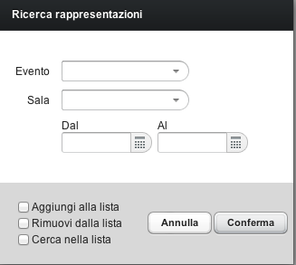

Per filtrare i record presenti in una lista si preme il bottone Ricerca.
Si presenta una scheda dove si possono inserire una o più condizioni di ricerca.

Premendo Conferma vengono presentati nella lista i record trovati.
Nella parte inferiore della finestra sono contenute le seguenti opzioni di ricerca:
Aggiungi alla lista: aggiunge i record trovati a quelli già contenuti nella lista.
Rimuovi dalla lista: rimuove i record trovati dalla lista visualizzata.
Cerca nella lista: cerca solo tra i record già presenti in lista.
Utilizzando queste opzioni è possibile effettuare ricerche combinate, affinando il risultato in diversi passaggi.
Per mostrare nuovamente tutti i record nella lista, effettuare una ricerca e premere Conferma senza inserire condizioni.